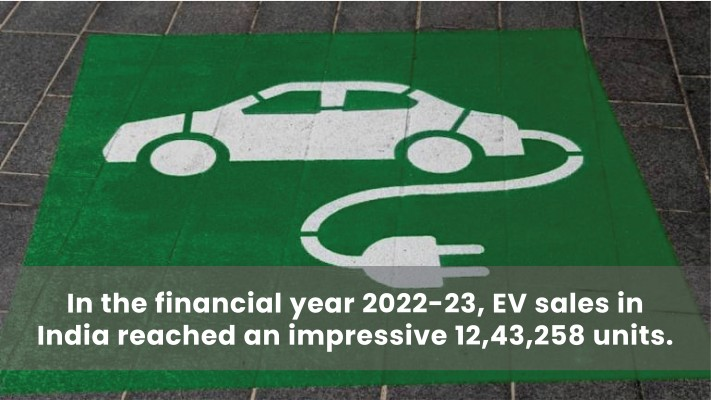
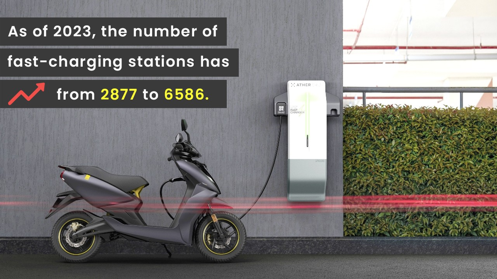
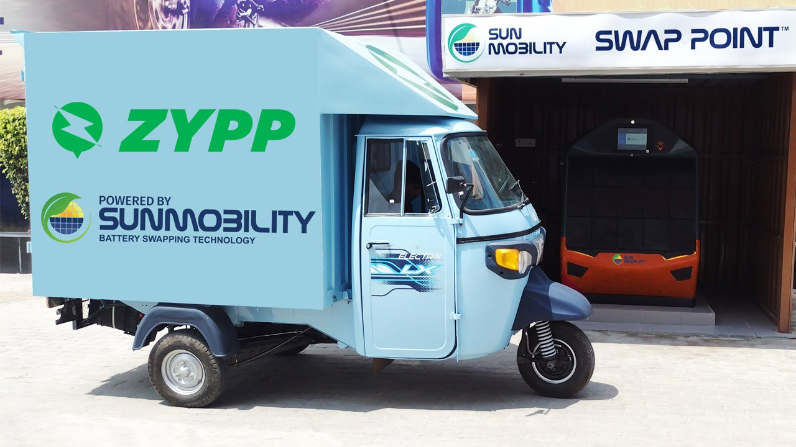
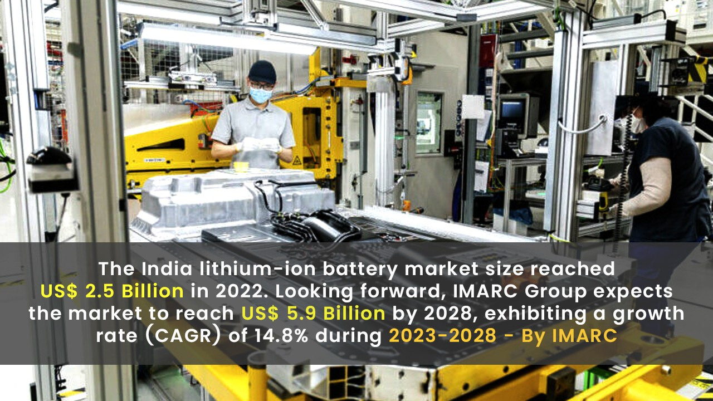
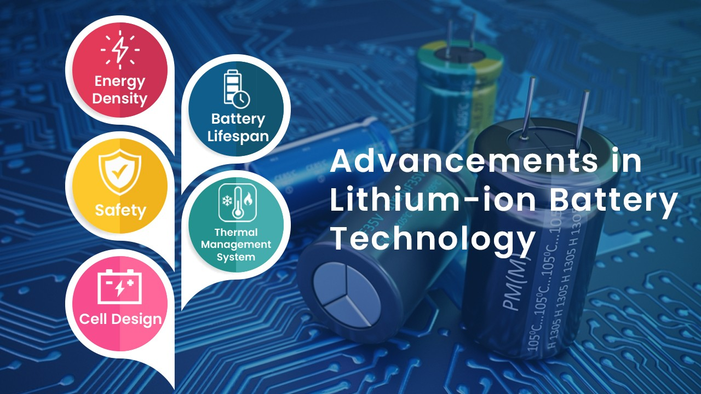
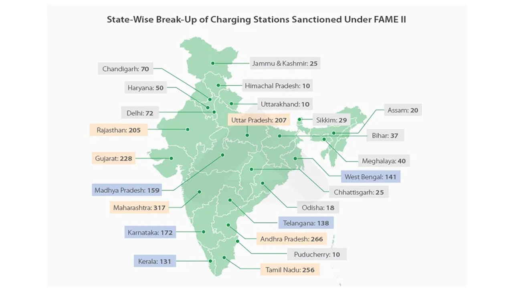
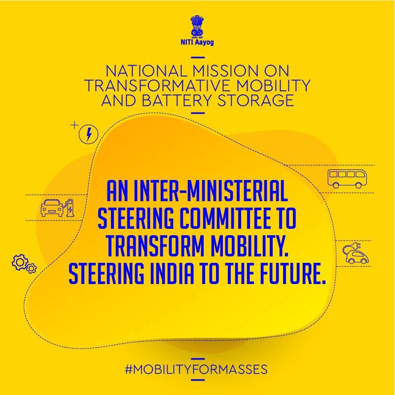
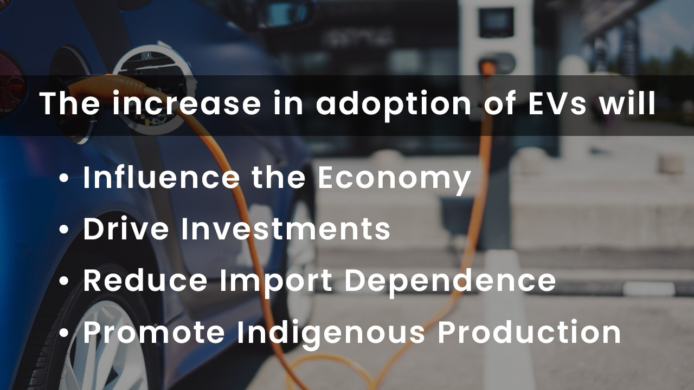
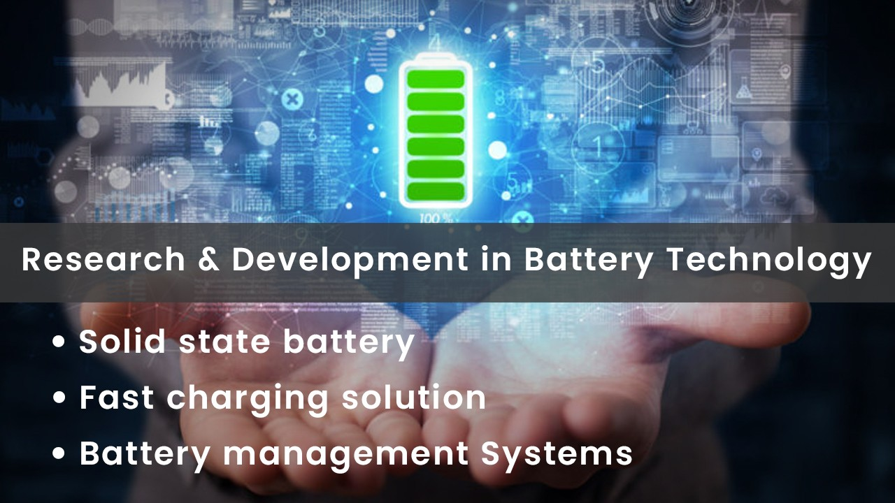
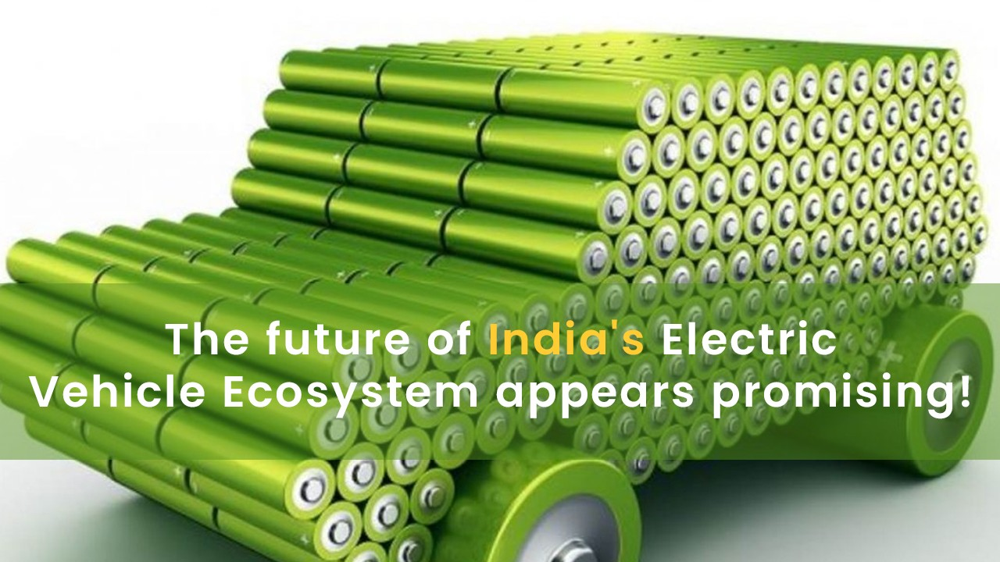

Introduction
The electric vehicle (EV) sector in India has witnessed a remarkable surge, thanks to the rapid growth of battery storage technologies. In the financial year 2022-23, EV sales in India reached an impressive 12,43,258 units. This surge is a testament to the advancements in battery technology, which have made EVs more practical and accessible for consumers. Furthermore, the number of public charging stations has significantly increased, providing a more convenient charging experience. The implementation of swappable battery technology has also gained traction, reducing charging time and enhancing convenience for EV owners. The establishment of domestic battery manufacturing capacity, coupled with advancements in lithium-ion battery technology, has further fueled the growth of the EV sector in India.

Battery storage plays a pivotal role in enabling the transition to cleaner and more sustainable transportation. As the world strives to reduce greenhouse gas emissions and combat climate change, the adoption of electric vehicles (EVs) has gained significant momentum. However, the intermittent nature of renewable energy sources, such as solar and wind, poses a challenge to their integration into the transportation sector. Battery storage provides a crucial solution by capturing and storing excess energy during times of high production and making it available for use during periods of low generation. This ensures a reliable and continuous power supply for EVs, regardless of the fluctuations in renewable energy output. Moreover, battery storage allows for optimal management of energy resources, enabling efficient charging, discharging, and load balancing. By facilitating the widespread use of renewable energy and reducing reliance on fossil fuels, battery storage technology drives the shift towards cleaner and more sustainable transportation, leading to a greener future for all.
Advancements in charging infrastructure have played a crucial role in the growth of India's electric vehicle (EV) sector.
Fast-charging Network Expansion:

Over recent years, there has been a significant expansion of fast-charging infrastructure across key cities and highways in India. As of 2023, the number of fast-charging stations has increased from 2877 to 6586. This expansion has had a profound impact on alleviating range anxiety among EV owners, as fast-charging stations enable quicker charging times and longer driving ranges. It has also played a vital role in promoting EV adoption by addressing one of the key concerns for potential buyers. The availability of a well-developed fast-charging network instills confidence in consumers, knowing that they can conveniently charge their vehicles and have access to reliable and efficient charging infrastructure.
Swappable Battery Technology:

Swappable battery technology has emerged as an innovative solution to overcome charging infrastructure limitations. The concept involves the use of standardized battery packs that can be easily swapped at designated stations, eliminating the need for time-consuming charging sessions. This technology not only reduces charging time significantly but also provides a solution for areas with limited charging infrastructure. Various initiatives and partnerships have been established to implement battery-swapping networks in India. For instance, SUN Mobility has been a pioneer in deploying battery swapping stations, enabling EV owners to conveniently exchange depleted batteries for fully charged ones. This approach has gained traction as a viable option, particularly in urban areas and for commercial fleet operators where fast turnaround times are crucial. Swappable battery technology addresses the concerns of long waiting times at charging stations and enhances the overall convenience and user experience of owning an EV. By combining fast-charging infrastructure expansion and the implementation of swappable battery technology, India is making significant strides in addressing charging infrastructure limitations and encouraging the wider adoption of electric vehicles.
Battery manufacturing developments are instrumental in driving the growth of India's electric vehicle (EV) sector.
Domestic Battery Manufacturing Capacity:

India has witnessed a substantial increase in domestic battery manufacturing capacity. “The India lithium-ion battery market size reached US$ 2.5 Billion in 2022. Looking forward, IMARC Group expects the market to reach US$ 5.9 Billion by 2028, exhibiting a growth rate (CAGR) of 14.8% during 2023-2028”- By IMARC Group. This growth has been facilitated by the presence of key players in the market, including Amara Raja and Exide, who have made significant investments in establishing battery manufacturing plants across India. The government's initiatives, such as the National Programme on Advanced Chemistry Cell Battery Storage, have further supported the growth of domestic battery manufacturing. These initiatives provide financial incentives, tax benefits, and favorable policies to attract investments and promote the localization of battery production.
Advancements in Lithium-ion Battery Technology:

Lithium-ion batteries, which are widely used in EVs, have witnessed remarkable advancements. The latest developments in lithium-ion battery technology have led to improved energy density, resulting in longer driving ranges for EVs. Battery lifespan has also been extended, allowing for more sustained performance over the vehicle's lifecycle. Enhanced safety features, such as advanced thermal management systems and improved cell designs, have made lithium-ion batteries even safer. These advancements have had a significant impact on the performance and affordability of EV batteries. With increased energy density, EVs can travel longer distances on a single charge, reducing range anxiety and enhancing the overall usability of electric vehicles. The longer lifespan of batteries means that EV owners can enjoy reliable performance over an extended period, reducing the need for frequent battery replacements. Moreover, the enhanced safety features instill confidence in consumers, assuring them of the robustness and reliability of EV batteries. The combination of increased domestic battery manufacturing capacity and advancements in lithium-ion battery technology is vital in driving the adoption of electric vehicles in India. These developments contribute to reducing the cost of EV batteries, making electric vehicles more affordable and accessible to a wider consumer base.
Government initiatives and policies play a crucial role in driving the adoption of electric vehicles (EVs) and battery storage technologies in India.
FAME India Scheme:

The FAME (Faster Adoption and Manufacturing of Electric Vehicles) India scheme has been instrumental in promoting EV adoption and supporting the growth of battery storage technologies. The scheme was launched in 2015 and has witnessed subsequent phases. Under the FAME India scheme, the government provides financial incentives, subsidies, and support to both consumers and manufacturers. For consumers, the scheme offers upfront purchase incentives on EVs, reducing the overall cost of ownership. These incentives vary based on the type and capacity of the vehicle. Additionally, the FAME India scheme supports the establishment of charging infrastructure by providing grants to public and private entities. This financial support has been crucial in expanding the charging infrastructure network across the country, enhancing the convenience and accessibility of EV charging.
National Mission on Transformative Mobility and Battery Storage:

The National Mission on Transformative Mobility and Battery Storage, launched in 2019, aims to accelerate the adoption of EVs and battery storage solutions in India. The mission focuses on achieving objectives such as electric vehicle penetration, domestic manufacturing capacity, and advanced battery technologies. It sets targets for electric mobility and battery storage, aiming to achieve a certain percentage of EV sales by a designated year. The mission also promotes research and development, aiming to develop innovative battery technologies and encourage indigenous manufacturing. Furthermore, it facilitates the creation of a favorable policy and regulatory framework, supporting EV adoption and encouraging private-sector investments in the EV and battery storage sectors. The National Mission on Transformative Mobility and Battery Storage aligns with the government's vision of transforming the transportation sector and fostering a sustainable and clean energy ecosystem in India. These government initiatives and policies have been instrumental in driving the adoption of EVs and battery storage technologies by providing financial incentives, supporting infrastructure development, and creating a conducive environment for the growth of the sector.
Future Outlook and Opportunities:
Electric Vehicle Adoption Projections:
The future outlook for electric vehicle (EV) adoption in India is highly promising. According to various projections, the demand for EVs in India is expected to experience significant growth in the coming years. By 2030, it is projected that EV sales in India will reach One crore units annually. This surge in EV adoption will inevitably lead to a substantial increase in the demand for battery storage technologies. The growing number of EVs on the road will require efficient and reliable energy storage solutions to support their charging needs. This presents a tremendous opportunity for the battery storage industry to expand its manufacturing capacity, develop innovative technologies, and cater to the rising demand.

The increased adoption of EVs and the corresponding growth in battery storage technologies will have a profound impact on various aspects. Firstly, it will positively influence the economy by creating new job opportunities in manufacturing, research, and development, and charging infrastructure deployment. It will also drive investments in the domestic battery manufacturing sector, reducing import dependence and promoting indigenous production. Moreover, the widespread adoption of EVs will contribute to the reduction of fossil fuel consumption, leading to decreased oil imports and improved energy security.
From an environmental perspective, the growth of EVs and battery storage technologies will significantly reduce carbon emissions and air pollution. The transition from internal combustion engine vehicles to EVs will result in cleaner transportation, contributing to India's efforts to mitigate climate change and improve air quality. Additionally, the increased utilization of renewable energy sources for charging EVs, coupled with advanced battery technologies, will enable a more sustainable and greener energy ecosystem.
Research and Development:
Ongoing research and development efforts in battery technology are driving continuous advancements in the industry. Scientists and engineers are actively exploring various areas to improve battery performance, safety, and charging capabilities. Solid-state batteries, which offer higher energy density and improved safety compared to traditional lithium-ion batteries, are an area of focus. Researchers are working towards developing commercially viable solid-state battery solutions that could revolutionize the EV market by offering longer driving ranges and shorter charging times.
Fast-charging solutions are another aspect of research and development in battery technology. The aim is to develop charging technologies that can rapidly charge EVs, reducing charging times to levels comparable to refueling a conventional vehicle with gasoline. This advancement will enhance the convenience and usability of EVs, making them more comparable to traditional vehicles in terms of refueling time.

Additionally, advanced battery management systems (BMS) are being developed to optimize battery performance, extend lifespan, and enhance overall efficiency. BMS technologies integrate software and hardware components to monitor and control various parameters of the battery, ensuring optimal charging, discharging, and temperature management. These advancements in BMS will further improve the reliability, safety, and performance of EV batteries.
The ongoing research and development efforts in battery technology hold immense potential to revolutionize the EV industry and shape the future of sustainable transportation. Continued investments in research, collaborations between academia and industry, and supportive government policies will further drive the innovation and commercialization of advanced battery technologies in India.
Conclusion:
The rapid growth of battery storage technologies in India's electric vehicle (EV) sector marks a significant revolution in the country's transportation landscape. This newsletter has shed light on key aspects driving this transformation, including advancements in charging infrastructure, battery manufacturing, and supportive government initiatives.
The expansion of fast-charging infrastructure across key cities and highways has alleviated range anxiety and bolstered EV adoption. With a growing number of charging stations, EV owners can enjoy the convenience of quicker charging times and extended driving ranges. Additionally, the implementation of swappable battery technology offers a viable solution to overcome charging infrastructure limitations, particularly in areas with limited access to charging stations.
The increasing domestic battery manufacturing capacity in India, supported by key players and government initiatives like the FAME India scheme, has played a crucial role in fostering the growth of the EV sector. The advancements in lithium-ion battery technology, including improved energy density, longer lifespan, and enhanced safety features, have made EVs more efficient, affordable, and reliable.

Looking ahead, the future of India's electric vehicle ecosystem appears promising. Projections indicate a significant surge in EV adoption, which will further drive the demand for battery storage technologies. This growth not only presents economic opportunities but also contributes to environmental sustainability and energy security. The continued focus on research and development, including advancements in solid-state batteries, fast-charging solutions, and battery management systems, ensures a continuous innovation cycle in the battery storage industry.
As India continues its transition towards a cleaner and more sustainable transportation system, the battery storage revolution will play a vital role. The transformative impact of battery storage technologies on the electric vehicle ecosystem will shape a greener, more efficient, and technologically advanced future. It is an exciting time for the EV industry in India, and we can look forward to witnessing further advancements, collaborations, and initiatives that will accelerate this battery storage revolution.
Stay tuned for future updates on the latest developments, policy changes, and technological breakthroughs in India's electric vehicle and battery storage landscape.